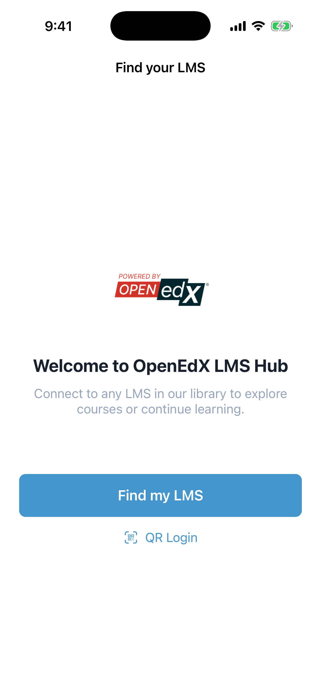
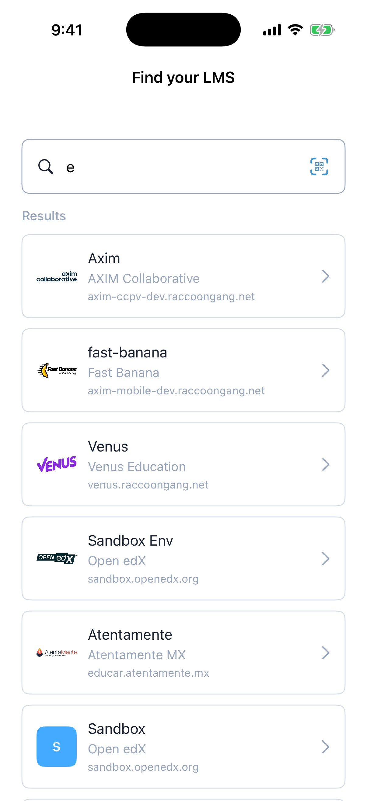
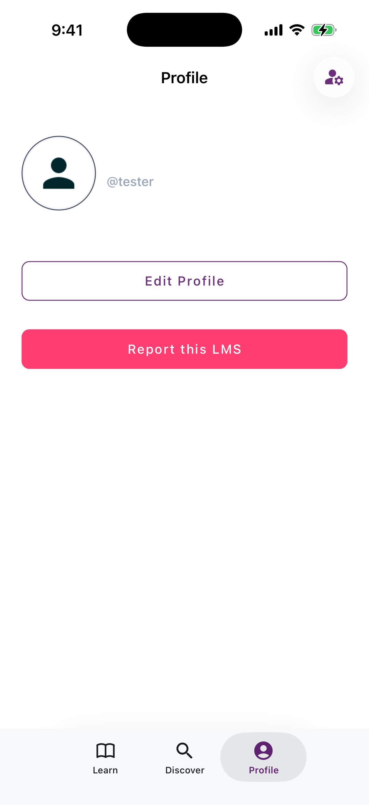
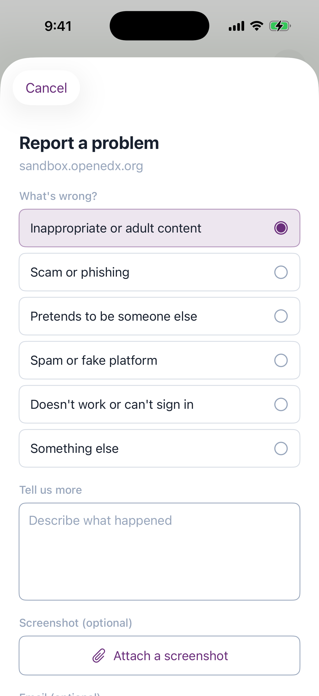

For learners — the mobile app¶
The app works like any Open edX mobile app, with one difference at the very start: instead of being locked to a single platform, you choose which Open edX platform to open. Everything after sign-in is the Open edX experience you already know.

1. Find your platform¶
Open the app and you land on Find your LMS.
- Search (the default): type your platform's name or web address. Matches from the catalog appear with their logo — tap one to select it.
- Scan a QR code: if your platform shows a sign-in QR code, use QR Login to jump straight to it.
- Curated build: if you installed a provider's own branded version of the app, you skip the search and see just that provider's platforms in a list.

Pick a platform and the app takes on its identity — logo, colours, sign-in background — then drops you on that platform's sign-in screen.

2. Sign in and learn¶
Sign in with the account you already use on that platform. From here it's the standard Open edX app: your dashboard, course content, videos, dates, and offline downloads. Nothing about that part changes — the registry only decides which platform you connected to.
Want to switch platforms later? Tap Change on the sign-in screen to go back to the catalog.
3. Report a problem with a platform¶
Anyone can add a platform to the catalog, so once in a while you might hit one that doesn't belong. While you're signed into it, open the Profile tab and tap Report this LMS.

Pick what's wrong, add a short note, and optionally attach a screenshot:
| Reason | Use it when… |
|---|---|
| Inappropriate or adult content | The platform hosts adult or harmful content |
| Scam or phishing | It asks for payment or credentials in a suspicious way |
| Pretends to be someone else | It impersonates a real institution |
| Spam or fake platform | It isn't a real learning platform |
| Doesn't work or can't sign in | It's broken or inaccessible |
| Something else | Anything not covered above |

The app shrinks and compresses the screenshot before sending, so it uploads quickly even on mobile data. Your email is optional.
What happens next
Your report goes straight to the moderators. They open the platform, check it themselves, and decide whether to remove it. Reports never hide a platform automatically — a real person makes every call — so a pile of complaints can't be used to knock a legitimate platform offline.
Getting the app¶
- iOS — TestFlight (pilot)
- Android — APK / Play (pilot)
Download links are on the project landing page.